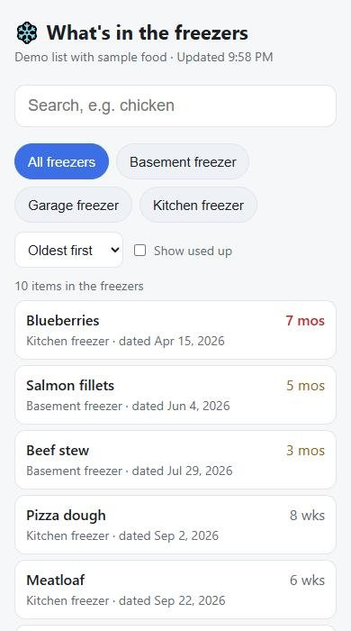
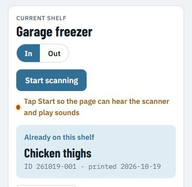
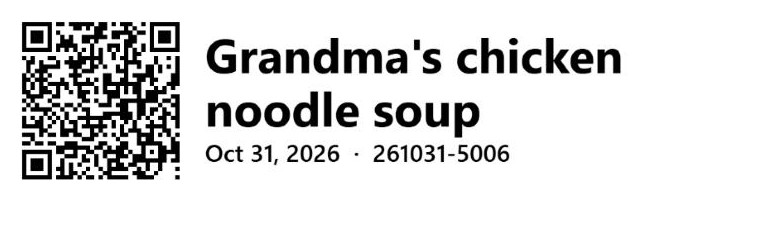

Stick a printed label on the food. Scan it going in and coming out. Everyone in the house can see the list on their phone and search it: "do we still have chicken?"
1Label itType "Meatloaf", print a label. The QR code holds the name, the date and a number that makes each pack unique.
2Scan it inAt the freezer, scan the freezer's own label, then the food. Beep: it's on the list.
3Scan it outScan the TAKE OUT label, then the food. It moves to "used up".
4Look it upThe family link lists every food A to Z with how many packs and where, flags the oldest few (two months or more) under "Use these first", and prints it for the fridge.
Storage bins too. Make bin labels ("Christmas" × 5 gives Christmas 1 to 5, or carries on from the last Christmas bin; printed big), stick one on each bin, then scan a bin and photograph what's inside. Add a few words too. Later, scan any bin, or search the words ("lights"), to see inside without opening it.

The family list: A to Z, oldest on top, one tap to print.

The scanning page, right after a scan.

A label. The words are for people; the QR code is for the scanner.
What you need
To start: a phone and any printer. Print labels on plain paper, cut them out, tape them on, and scan with the phone's camera. Add the gadgets later if you like it.
Start for free
Faster, if you get hooked
Labels
Plain paper on any printer, cut out and taped on (14 per page)
Brother label printer (we use the QL-1110NWB) with DK-1201 sticky labels, 29 × 90 mm
Scanning
The phone's camera: tap Scan with camera
A Bluetooth barcode scanner that reads QR codes ("2D") and types like a keyboard ("HID"); we use the Tera HW0009
Phone
An Android phone with Chrome. iPhone is untested.
Website
Your own private copy on Netlify's free plan. One click below. No app store, no subscription.
Set it up
Make your own copy. Click the button, sign up for a free Netlify account if asked, and make up two passwords when it asks: one for scanning, one for the family list (letters, numbers and dashes, 16 or more characters).
Open your scanning link on your phone. Netlify gives your site an address like something.netlify.app. Your scanning link is https://something.netlify.app/#w=your scanning password. Open it in Chrome, then menu ⋮ → Add to Home screen. Keep this link to yourself.
Send the family list. On the scanning page tap Send the family list and text it to whoever should see what's in the freezers. They can look and search, not change anything.
Make labels. Tap Make labels. Add one Freezer label per freezer ("Garage freezer", "Kitchen freezer"…), a Take out label, then your food with how many of each. Choose Plain paper and print the sheet at 100%, or Label printer if you have one.
Put them on. Freezer and Take out labels on the freezer doors; a food label on each pack. On paper, clear packing tape over the label keeps it readable.
Scan. Open the scanning page and tap Scan with camera (or Start scanning with a Bluetooth scanner). Scan the freezer label, then the food going in. To take something out, scan Take out, then the food.
Label printer from a computer: choose the Brother printer, paper size 29 mm × 90 mm, scale 100%. Bluetooth scanner: put it in keyboard (HID) mode and pair it with the phone; for the Tera, scan "Bluetooth HID" then "Pairing" from its manual, or hold the trigger for 8 seconds.
Or build your own with Claude Code
Rather have your own version built from nothing, your way? Claude Code is an AI helper that writes and runs code for you. Copy this prompt, paste it in, and change anything you like (your freezers, your words). It explains each step as it goes and asks before putting anything online.
Show the prompt
Build me a small web app called "Freezer Scan" that tracks food in several home freezers using printed QR labels. I have no coding background, so explain each step in plain English and keep the code simple.
How it is built:
- A static website hosted on Netlify's free plan, plus ONE Netlify Function as the API. Store all data in Netlify Blobs. No other server, no database service, no paid services. Use compare-and-swap (etags) so two phones scanning at once can't overwrite each other.
- Two passwords set as Netlify environment variables: WRITE_KEY (can scan and change things) and READ_KEY (view only). Each at least 16 letters, numbers, "_" or "-", and different; the API refuses to run otherwise.
- The key lives in the link after the "#" so it is never sent in a page request: scanning link https://<site>/#w=<WRITE_KEY>, family link https://<site>/list.html#k=<READ_KEY>. The pages send the key to the API in a header. If the key is missing or wrong, show "This link is missing its key."
- Add a "Deploy to Netlify" button to the README so someone else can make their own copy and be asked for the two keys.
Labels (QR codes):
- A food label's QR code holds three lines:
<food name>
Printed: YYYY-MM-DD
ID: YYMMDD-NNN
The ID is unique per pack, handed out by the API from a daily counter.
- A freezer label holds "LOC: <freezer name>". A take-out label holds "CMD: TAKE OUT". A storage-bin label holds "BIN: <name>" plus its own ID line.
- A label-maker page that prints a sheet of cut-out labels on plain paper (two columns with dashed cut lines, fits Letter and A4, printed at 100%; bin labels twice as big). Tell the user to tape over paper labels. Optionally also support a Brother label printer at 29 x 90 mm.
Scanning page (write key):
- "Scan with camera" uses the phone camera to read QR codes (bundle a QR-reading library; no app install). Also accept a Bluetooth scanner that types like a keyboard, and a box to type or paste a label by hand.
- Scan a freezer label to choose the freezer, then food goes "in" to that freezer. Scan TAKE OUT, then food goes "out" (used up). Beep and show what happened.
- "Move food without scanning": tick foods, pick a freezer, Move, with Undo.
- "Send the family list" shares the view-only link.
Family list (read key, view only):
- Every food A to Z, packs of the same food combined, with how many and which freezer. Search box and a filter by freezer.
- A "Use these first" box for the oldest packs (two months or more).
- A Print button that prints the list for the fridge (A to Z, count, freezer, age of oldest pack); pick a freezer first to print just that one.
Storage bins:
- Scan a bin label to see its photos and notes; add a photo (shrink it on the phone before upload) and a few words. Search across all bins' notes. Viewable with the read key, changeable only with the write key.
Free demo:
- An optional DEMO=1 setting where the key "demo" opens a separate sample list anyone can try, reset to sample food every day, with photo uploads turned off.
Also: tell search engines not to index the pages, make everything work on Android Chrome at phone size, and leave room at the bottom for Netlify's free-plan badge.
Before you deploy anything or publish it anywhere, stop, show me what you built and ask me to review it. Only deploy after I say yes.
Or host it yourself
Rather not use Netlify? The same app runs in one small Docker container, and your list is kept as plain files on your own machine. It needs a little comfort with a command line. Step-by-step instructions: selfhost guide on GitHub.
It has to be https. Phones only let a web page use the camera on an https:// address, so a plain http://192.168.1.20 link opens but can't scan. Both options below take care of that.
On a VPS (a rented server, reachable from anywhere)
Any small Linux server works, from about $5 a month; 1 CPU and 512 MB of memory is plenty. You also need a domain name, like freezer.yourname.com.
Install Docker on the server, and point your domain at the server's IP address (an "A record" at your domain company).
Download the code, copy selfhost/env.example to .env, and fill in your domain and your two passwords.
Run docker compose -f selfhost/docker-compose.vps.yml --env-file .env up -d --build. Caddy, the web server in front, gets the https certificate by itself.
Open https://your domain/#w=your scanning password on your phone and add it to the home screen.
Open ports 80 and 443 in the server's firewall, nothing else.
On a little server at home (Raspberry Pi, NAS, old PC)
Nothing is opened to the internet. Tailscale (free for personal use) gives the server a private https address that only your own devices can reach, at home or away.
Install Docker and Tailscale on the server. In Tailscale's admin page, turn on MagicDNS and HTTPS certificates.
Download the code, copy selfhost/env.example to .env, and fill in your two passwords.
Run docker compose -f selfhost/docker-compose.home.yml --env-file .env up -d --build, then sudo tailscale serve --bg 8080.
Your address looks like https://pi.tail1234.ts.net. Add /#w=your scanning password for your scanning link.
Every phone that uses it, yours and the family's, needs the Tailscale app signed in to your account.
Don't want Tailscale on everyone's phone? A free Cloudflare Tunnel gives the home server a normal https address without opening ports (you need a domain on Cloudflare; see Cloudflare's "Tunnel" guide).
Self-hosted, backups are your job: the guide has a one-line copy command to run nightly. No Netlify badge, no usage limits.
Questions
I moved food to another freezer without scanning it. Now what?
On the scanning page, under "What's where", tap Move food without scanning. Tick the foods (all their packs move), pick the freezer, tap Move. Undo puts them back if you picked wrong.
Can I print the list?
Yes. On the family list tap Print: A to Z (a page for most freezers), with how many of each, which freezer and how old the oldest pack is. Pick a freezer first to print just that one.
I labelled something "TJ Waffles 11-2-26". Does that sort under T?
No. The family list leaves off a "TJ" / "Trader Joe's" in front and a date typed at the end, so it's listed as Waffles, and packs of the same food are counted together. The label itself doesn't change. For new labels, just type the food; the label adds the date.
Who can see my list?
Only people with one of your two links. The family link can only look; the scanning link can change the list, so share only the family link. The list pages tell search engines to stay away.
Two packs of the same thing?
Each label gets its own number, so seven packs of meatloaf are seven separate entries. Take one out and six are left.
Do I have to scan the freezer label every time?
Only when you switch freezers. If you forget, food still gets saved; it just isn't sorted into a freezer.
What does it cost?
Nothing to start: paper, tape, your phone and a free Netlify site. A label printer and a Bluetooth scanner are optional upgrades.